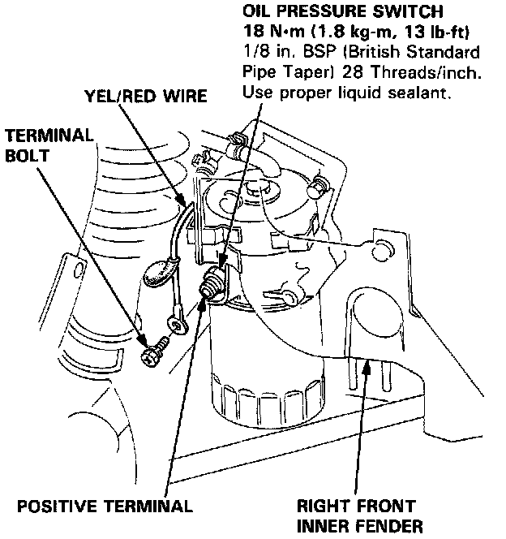

Oil Pressure Sender: Specifications

Oil Pressure Switch Test
1. Remove the terminal bolt and the YEL/RED wire from the oil pressure switch.
2. There should be continuity between the positive terminal and the engine (ground) with the engine stopped. There should be no continuity when the engine runs.
3. If the switch fails to operate, check the engine oil level, then inspect the oil pump and pressure if the oil level is correct.